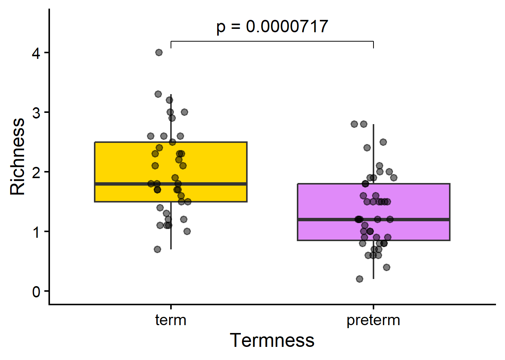
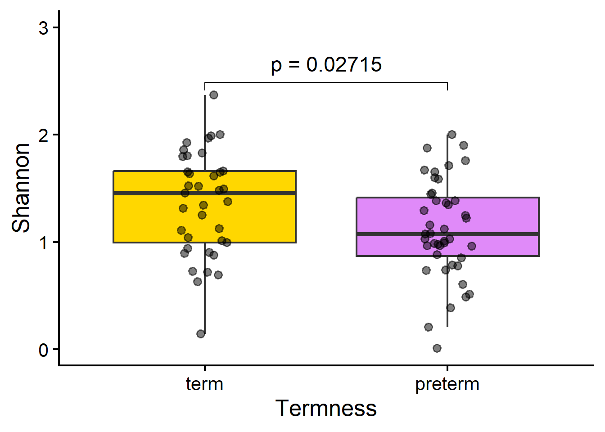
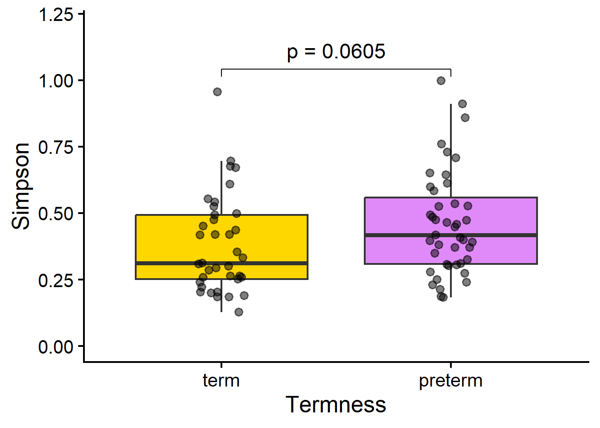
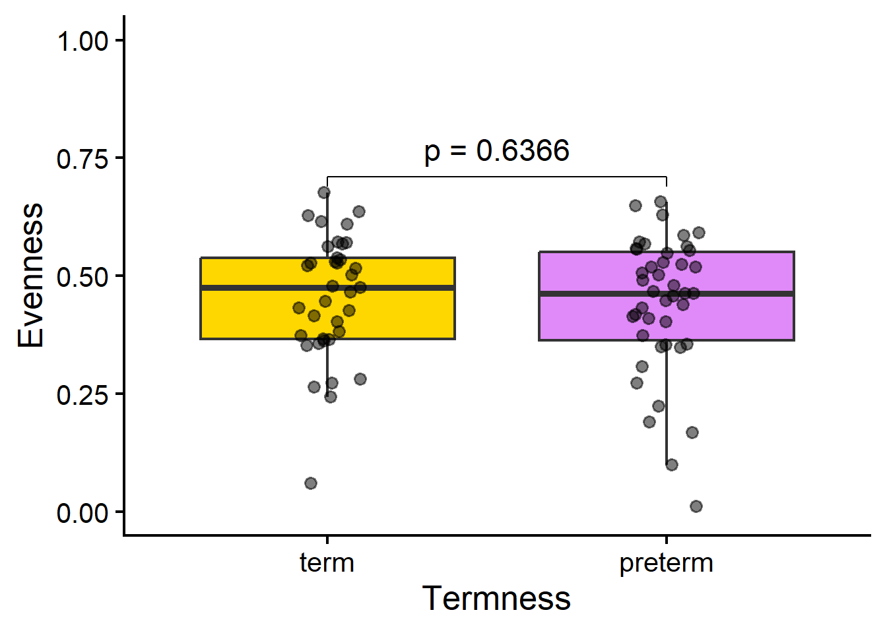

df_species <- read.delim("baby_species.tsv")
names(df_species)[1] <- "Sample"
library(readxl)
df_clinic <- read_excel("df_clinic_final.xlsx")
df_clinic <- as.data.frame(df_clinic)
row.names(df_clinic) <- df_clinic$SampleFIGURE_4A_ALPHA_DIVERSITY
Import
df_species <- df_species[df_species$Sample %in% df_clinic$Sample, ]row.names(df_species) <- df_species$Sample
df_species <- df_species[row.names(df_clinic), ]
df_species <- df_species[ , -1]ALPHA DIVERSITY
https://cran.r-project.org/web/packages/tabula/vignettes/alpha.html
library(tabula)df_alpha_clean <- df_species
diversity(df_alpha_clean, evenness = F) -> df_a1
df_a1$ID <- row.names(df_a1)
evenness(df_alpha_clean) -> df_a2class(df_a2)[1] "EvennessIndex"
attr(,"package")
[1] "tabula"df_a2@.Data -> evenness_ok
df_alpha_kq <- cbind(df_a1[ , c(12, 3, 5, 7) ], evenness_ok)
names(df_alpha_kq) <- c("Sample", "shannon", "simpson", "richness", "evenness")df_alpha_kq Sample shannon simpson richness evenness
CB10 CB10 0.901328035 0.4985025 1.200000 0.36272108
CB11 CB11 1.478963250 0.3325222 3.199999 0.42673859
CB12 CB12 1.650019381 0.2583964 2.200000 0.53380677
CB13 CB13 0.727229480 0.5528928 0.700000 0.37372202
CB14 CB14 1.038836800 0.4354673 1.700000 0.36666381
CB15 CB15 0.144631102 0.9559779 1.100000 0.06031585
CB16 CB16 0.691209356 0.6705127 1.700000 0.24396657
CB17 CB17 1.492670792 0.3083289 1.800000 0.51642865
CB18 CB18 1.312031311 0.4197579 2.600000 0.40269872
CB19 CB19 1.616323246 0.2588464 1.700000 0.57049119
CB20 CB20 0.894053802 0.6082774 2.400000 0.28132116
CB21 CB21 1.107568712 0.4176022 1.300000 0.43180919
CB23 CB23 0.995392556 0.4517463 1.100000 0.41511094
CB24 CB24 0.940640036 0.5246010 1.400000 0.35643032
CB25 CB25 1.803839984 0.2026153 1.700000 0.63667637
CB26 CB26 1.986559367 0.2030706 4.000000 0.53852651
CB27 CB27 2.002133297 0.2219390 2.600000 0.61451012
CB28 CB28 1.343948118 0.3536460 1.800000 0.46497414
CB29 CB29 0.716430577 0.6961369 1.500000 0.26455587
CB30 CB30 1.633652361 0.3008388 2.600000 0.50141312
CB31 CB31 1.382964165 0.3069636 1.200000 0.55654572
CB32 CB32 1.219890318 0.3708790 1.200000 0.49091998
CB33 CB33 1.444350421 0.3047954 0.900000 0.65735221
CB34 CB34 0.963721228 0.4853782 1.000000 0.41853881
CB35 CB35 0.991821745 0.4483186 0.600000 0.55354626
CB36 CB36 1.926498922 0.1892897 2.900000 0.57212048
CB37 CB37 1.516361973 0.2627752 3.000000 0.44583181
CB42 CB42 1.373822588 0.3123734 1.800000 0.47531000
CB43 CB43 1.074956448 0.4171743 1.200000 0.43259430
CB44 CB44 1.122292846 0.4933893 1.900000 0.38115677
CB45 CB45 1.290011017 0.4072423 1.200000 0.51913862
CB46 CB46 0.958548200 0.5982252 1.500000 0.35396249
CB49 CB49 0.882201798 0.5267374 1.200000 0.35502412
CB50 CB50 2.000493473 0.1857518 2.400000 0.62947124
CB51 CB51 1.385706557 0.3257985 2.000000 0.46256021
CB52 CB52 0.853411594 0.6512634 1.600000 0.30780317
CB53 CB53 1.159324218 0.3958587 0.800000 0.55751710
CB54 CB54 1.026126479 0.4649175 0.900000 0.46701029
CB55 CB55 1.344336246 0.3489836 1.900000 0.45656787
CB56 CB56 1.077374186 0.3905988 0.800000 0.51810747
CB57 CB57 0.775271322 0.5250851 0.800000 0.37282670
CB58 CB58 1.585511542 0.2792233 1.500000 0.58548085
CB59 CB59 0.738748606 0.6442140 1.500000 0.27279723
CB60 CB60 0.975383480 0.4938124 0.700000 0.50124795
CB61 CB61 0.485280908 0.7604989 0.400000 0.35005618
CB63 CB63 0.627654964 0.6763840 1.000000 0.27258709
CB64 CB64 1.011962857 0.4750594 1.600000 0.36498845
CB66 CB66 1.758554532 0.2733623 2.800000 0.52774508
CB67 CB67 1.901424928 0.1826067 2.500000 0.59071087
CB68 CB68 1.966215845 0.1851546 2.300000 0.62708323
CB69 CB69 1.794682036 0.2393759 3.000000 0.52766183
CB70 CB70 1.028779952 0.4728885 1.000000 0.44679346
CB71 CB71 1.453871733 0.3022591 1.600000 0.52437338
CB72 CB72 0.007901039 0.9980038 0.200000 0.01139879
CB73 CB73 0.984711309 0.4754202 0.700000 0.50604151
CB74 CB74 0.786461745 0.6119779 0.600000 0.43893266
CB75 CB75 1.246241451 0.3812064 0.900000 0.56718893
CB76 CB76 0.877255491 0.5410592 1.200000 0.35303358
CB77 CB77 1.659034156 0.2520498 2.300000 0.52911409
CB78 CB78 1.598906502 0.3107509 2.800000 0.47983445
CB80 CB80 1.006509238 0.5351191 1.800000 0.34822830
CB81 CB81 1.857297319 0.1995886 2.100000 0.61004554
CB82 CB82 1.121140051 0.3985801 1.500000 0.41400268
CB83 CB83 1.652544111 0.2632845 2.300000 0.52704422
CB84 CB84 0.965606284 0.4574150 1.100000 0.40268910
CB85 CB85 1.453761799 0.2937320 2.100000 0.47750077
CB86 CB86 1.711161465 0.2398989 2.000000 0.57119973
CB87 CB87 1.670207636 0.2300196 2.100000 0.54859429
CB88 CB88 1.653698956 0.2504689 1.900000 0.56163465
CB89 CB89 1.361075215 0.3716262 1.900000 0.46225282
CB90 CB90 2.367559168 0.1276329 3.300000 0.67712113
CB91 CB91 1.828030785 0.1853837 2.500000 0.56790969
CB92 CB92 0.735026435 0.5838167 0.600000 0.41022606
CB93 CB93 0.205933499 0.9108789 0.800000 0.09903308
CB94 CB94 0.605750911 0.7077486 1.500000 0.22368526
CB95 CB95 1.872714511 0.2136260 1.800000 0.64791476
CB96 CB96 0.387039701 0.8589500 1.000000 0.16808921
CB97 CB97 1.522259799 0.2847667 1.500000 0.56212392
CB98 CB98 0.513813946 0.7289999 1.500000 0.18973575
CB99 CB99 1.249632848 0.4196945 1.100000 0.52113737MERGE
df_merge_alpha <- merge(x = df_clinic,
y = df_alpha_kq,
all.x = T,
by = "Sample")df_merge_alpha$Termness <- factor(df_merge_alpha$Termness,
levels = c("term",
"preterm"))RICHNESS
library(ggstatsplot)You can cite this package as:
Patil, I. (2021). Visualizations with statistical details: The 'ggstatsplot' approach.
Journal of Open Source Software, 6(61), 3167, doi:10.21105/joss.03167library(ggsignif)
library(tidyverse)Warning: package 'readr' was built under R version 4.5.3── Attaching core tidyverse packages ──────────────────────── tidyverse 2.0.0 ──
✔ dplyr 1.2.1 ✔ readr 2.2.0
✔ forcats 1.0.1 ✔ stringr 1.6.0
✔ ggplot2 4.0.2 ✔ tibble 3.3.1
✔ lubridate 1.9.5 ✔ tidyr 1.3.2
✔ purrr 1.2.1 ── Conflicts ────────────────────────────────────────── tidyverse_conflicts() ──
✖ dplyr::filter() masks stats::filter()
✖ dplyr::lag() masks stats::lag()
ℹ Use the conflicted package (<http://conflicted.r-lib.org/>) to force all conflicts to become errorsoptions(digits = 4)
options(scipen = 4)
g1 <- ggplot(df_merge_alpha,
mapping = aes(x = Termness,
y = richness,
fill = Termness)) +
geom_boxplot(outliers = F) +
geom_jitter(width = 0.1,
alpha = 0.5) +
scale_fill_manual(values = c("#FFD700", "#E08AF9")) +
scale_y_continuous(limits = c(0, 4.5)) +
ggsignif:::geom_signif(comparisons = list(c("term", "preterm")),
map_signif_level = function(p_ok) {
capture.output(cat(p_ok)) -> p_ok_final
paste0("p", " = ", p_ok_final)
},
textsize = 6,
vjust = -0.5,
# step_increase = 0.6,
test = "t.test",
test.args = list(paired = F)
) +
theme_classic(base_size = 19) +
labs(y = "Richness") +
theme(legend.position = "none")
g1
SHANNON
library(ggstatsplot)
library(ggsignif)
library(tidyverse)
options(digits = 4)
options(scipen = 4)
g1 <- ggplot(df_merge_alpha,
mapping = aes(x = Termness,
y = shannon,
fill = Termness)) +
geom_boxplot(outliers = F) +
geom_jitter(width = 0.1,
alpha = 0.5) +
scale_fill_manual(values = c("#FFD700", "#E08AF9")) +
scale_y_continuous(limits = c(0, 3)) +
ggsignif:::geom_signif(comparisons = list(c("term", "preterm")),
map_signif_level = function(p_ok) {
capture.output(cat(p_ok)) -> p_ok_final
paste0("p", " = ", p_ok_final)
},
textsize = 6,
vjust = -0.5,
# step_increase = 0.6,
test = "t.test",
test.args = list(paired = F)
) +
theme_classic(base_size = 19) +
labs(y = "Shannon") +
theme(legend.position = "none")
g1
SIMPSON
library(ggstatsplot)
library(ggsignif)
library(tidyverse)
options(digits = 4)
options(scipen = 4)
g1 <- ggplot(df_merge_alpha,
mapping = aes(x = Termness,
y = simpson,
fill = Termness)) +
geom_boxplot(outliers = F) +
geom_jitter(width = 0.1,
alpha = 0.5) +
scale_fill_manual(values = c("#FFD700", "#E08AF9")) +
scale_y_continuous(limits = c(0, 1.2)) +
ggsignif:::geom_signif(comparisons = list(c("term", "preterm")),
map_signif_level = function(p_ok) {
capture.output(cat(p_ok)) -> p_ok_final
paste0("p", " = ", p_ok_final)
},
textsize = 6,
vjust = -0.5,
# step_increase = 0.6,
test = "t.test",
test.args = list(paired = F)
) +
theme_classic(base_size = 19) +
labs(y = "Simpson") +
theme(legend.position = "none")
g1
EVENNESS
library(ggstatsplot)
library(ggsignif)
library(tidyverse)
options(digits = 4)
options(scipen = 4)
g1 <- ggplot(df_merge_alpha,
mapping = aes(x = Termness,
y = evenness,
fill = Termness)) +
geom_boxplot(outliers = F) +
geom_jitter(width = 0.1,
alpha = 0.5) +
scale_fill_manual(values = c("#FFD700", "#E08AF9")) +
scale_y_continuous(limits = c(0, 1)) +
ggsignif:::geom_signif(comparisons = list(c("term", "preterm")),
map_signif_level = function(p_ok) {
capture.output(cat(p_ok)) -> p_ok_final
paste0("p", " = ", p_ok_final)
},
textsize = 6,
vjust = -0.5,
# step_increase = 0.6,
test = "t.test",
test.args = list(paired = F)
) +
theme_classic(base_size = 19) +
labs(y = "Evenness") +
theme(legend.position = "none")
g1